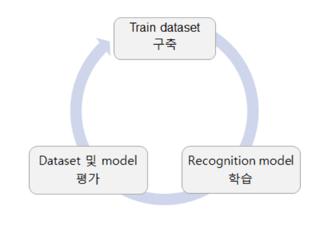
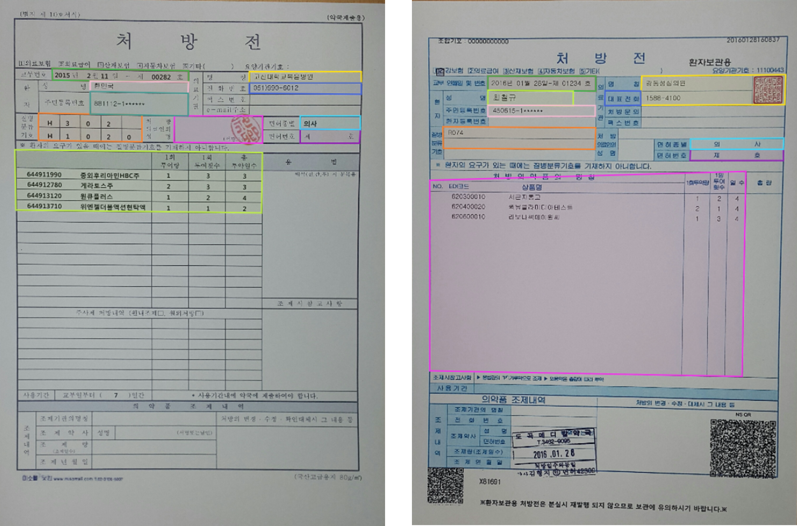
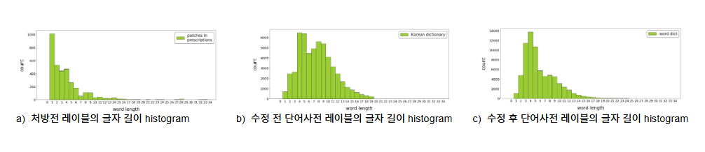
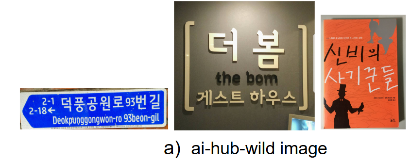

PROJECT TITLE
Data-centric AI 기반 문자 인식 모델 성능 고도화
TECHNOLOGIES
Python · PyTorch · OCR · Data-centric AI · Computer Vision
ROLE
Project Leader / 4-person team
PROJECT
처방전 OCR의 실제 오류를 분석하고, 부족한 데이터 특성을 다음 Dataset에 반영하는 Data-centric 학습 Cycle을 구축했습니다.
Overview

문자 인식 모델의 성능을 높이기 위해 모델 Architecture 변경에만 집중하지 않고, 모델의 Prediction Error를 다음 데이터 구축 과정으로 환류하는 Data-centric AI 접근을 적용했습니다.
Dataset 구축 → Model Training → Evaluation → Error Analysis → Dataset Reconstruction
Problem

처방전 문자 인식은 한글·영어·숫자·기호가 혼재하고, 문서마다 명암·색상·품질 차이가 존재했습니다. 또한 글자와 선이 겹치거나 Watermark, 낙서가 포함되는 등 일반적인 학습 데이터로 충분히 대응하기 어려운 예외 케이스가 존재했습니다.
구축한 처방전 Test Set으로 Open-source OCR을 평가한 결과 Precision 0.836 / Recall 0.855 / F1-score 0.845였으며, 특히 한글 및 실제 처방전 환경의 다양한 변형에 대한 Recognition 성능 개선이 필요했습니다.
Analyze
모델의 정량·정성 평가 결과를 기반으로 성능 저하의 원인이 모델 구조뿐 아니라 학습 데이터의 품질과 분포에 있다고 판단했습니다.
- 처방전 Domain과 유사한 의료·약학 Vocabulary 부족
- 한글 문자에 대한 상대적으로 낮은 Recognition 성능
- Noise가 심한 이미지에서의 인식 오류
- Watermark 등 복잡한 Background가 포함된 이미지에서의 성능 저하
각 Dataset Version의 평가 결과를 다음 데이터 구축 방향의 근거로 활용하고, 모델이 실제로 실패하는 케이스를 중심으로 Dataset을 반복적으로 재구성했습니다.
Action
1. Target Test Set & Baseline 구축
모델 개선의 기준이 되는 처방전 Test Set을 먼저 구축하고, 문자 검출·인식 난이도를 기준으로 데이터를 구분했습니다. 동일한 Test Set으로 상용 API와 Open-source OCR을 비교해 Baseline을 설정하고, 이후 Dataset Version별 성능을 동일한 기준으로 평가했습니다.
2. Domain-specific Synthetic Dataset 구축

처방전 문맥과 유사한 학습 데이터를 확보하기 위해 네이버 건강백과와 약학정보원에서 의료·의약 관련 단어를 Crawling했습니다.
실제 처방전 Label의 글자 길이 Histogram을 분석하고, 구축한 단어 사전도 유사한 길이 분포를 갖도록 조정한 뒤 Synthetic Image를 생성했습니다.
Precision 0.881 · Recall 0.857 · F1-score 0.869
Open-source 대비 Precision은 향상됐지만 Recall 개선은 제한적이었고, 정성 분석에서 한글 Recognition 정확도가 여전히 낮은 문제를 확인했습니다.
3. Large-scale Korean Print Dataset 추가
Dataset v1에서 확인한 한글 인식 오류를 개선하기 위해 AI Hub에서 제공하는 인쇄체 Dataset 약 110만 장을 추가했습니다.
대규모 한글 인쇄체 데이터를 학습에 포함하면서 한글 Recognition 성능이 개선되었고, Precision과 Recall이 모두 상승했습니다.
Precision 0.926 · Recall 0.904 · F1-score 0.915
Dataset v1 대비 F1-score가 0.869 → 0.915로 향상됐지만, 추가 Error Analysis에서 Noise가 심한 이미지와 Watermark Background에 대한 취약성이 남아 있음을 확인했습니다.
4. Text-in-the-Wild Dataset 추가

Dataset v2에서 확인한 Noise와 Background 변화에 대한 취약성을 개선하기 위해 AI Hub의 Text-in-the-Wild Dataset 약 50만 Crop 이미지를 추가했습니다.
도로교통표지판, 상품, 간판, 도서 등 다양한 실제 환경의 이미지를 수집하고, Annotation Coordinate를 이용해 문자·단어 영역을 Crop하여 학습에 활용했습니다.
Precision 0.942 · Recall 0.926 · F1-score 0.934
Dataset v2에서 실패했던 Noise 및 Watermark 사례에 대해 정성적으로 Recognition 정확도가 개선되는 것을 확인했습니다.
Result
| Dataset | Precision | Recall | F1-score |
|---|---|---|---|
| Open-source (EasyOCR) | 0.836 | 0.855 | 0.845 |
| Dataset v1 | 0.881 | 0.857 | 0.869 |
| Dataset v2 | 0.926 | 0.904 | 0.915 |
| Dataset v3 | 0.942 | 0.926 | 0.934 |
- 자체 구축 Dataset을 기반으로 최종 문자 인식 성능 약 93% 달성
- Dataset v1 → v2 → v3 반복 개선을 통해 Domain Vocabulary → Korean Character → Noise / Background 문제를 단계적으로 개선
- Prediction Error를 다음 Dataset 설계에 반영하는 Data-centric AI 학습 Pipeline 구축
- 프로젝트 결과를 기반으로 국제 학술지 논문 「Exploring the Effectiveness of Data-centric AI Approaches to Developing a Prescription Recognition System」 게재
More Detail
Dataset Version별 실험 과정과 정성적 Error Analysis 결과는 아래 Presentation에서 확인할 수 있습니다.